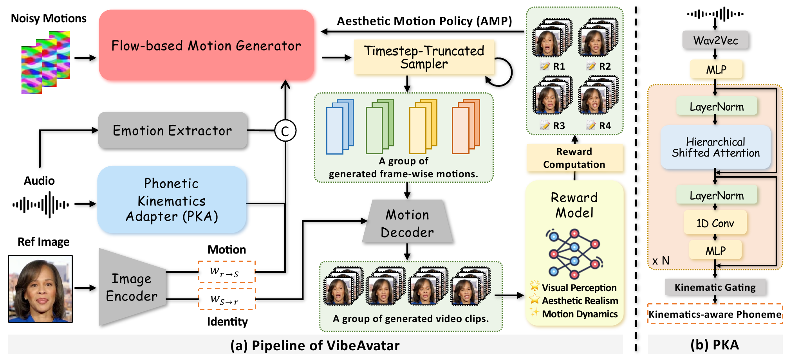

VibeAvatar: Aligning Phonetic Kinematics and Human Aesthetics for High-Fidelity Talking Avatar Synthesis
ACM MM 2026
Peking University
Abstract
Multi-modal talking avatar synthesis aims to generate realistic talking videos from a reference portrait and speech. Despite rapid progress in diffusion-based methods, existing approaches still struggle to jointly achieve accurate lip articulation, human-preferred motion aesthetics, and efficient inference. We observe that phonetic accuracy and motion aesthetics arise from fundamentally different sources and should be addressed at complementary stages rather than learned implicitly by a single generator. Based on this insight, we propose VibeAvatar, which disentangles these two objectives through a Phonetic Kinematics Adapter (PKA) that converts recognition-oriented speech features into phonetic-kinematic conditions at the conditioning stage, and an Aesthetic Motion Policy (AMP) that optimizes a flow-consistent stochastic sampling policy via Group Relative Policy Optimization (GRPO) at the post-training stage. With a lightweight flow-based motion generator operating in a compact 1D warp-based latent motion space, VibeAvatar achieves state-of-the-art results in articulation, aesthetics, and efficiency on both objective metrics and user studies, while generating a 10-second 512px video in under 10 seconds with only ~3GB VRAM.
Method

Overview of VibeAvatar. (a) The framework integrates a lightweight flow-based motion generator, a Phonetic Kinematics Adapter (PKA), and an Aesthetic Motion Policy (AMP) to improve lip articulation, motion aesthetics, and inference efficiency. (b) PKA transforms generic speech features into phonetic-kinematic conditions through hierarchical shifted attention, enabling local bidirectional interaction, causal aggregation, and a progressively enlarged receptive field for accurate lip articulation.
Video Demo
VibeAvatar consistently produces more accurate lip-sync, more natural facial expressions, and higher overall visual quality.
BibTeX
@inproceedings{wang2026vibeavatar,
title={VibeAvatar: Aligning Phonetic Kinematics and Human Aesthetics for High-Fidelity Talking Avatar Synthesis},
author={Wang, Qilin and Li, Mingyu and Tang, Hao},
booktitle={Proceedings of the 34th ACM International Conference on Multimedia},
year={2026},
doi={10.1145/3767308.3835899},
url={https://arxiv.org/abs/2609.18632}
}